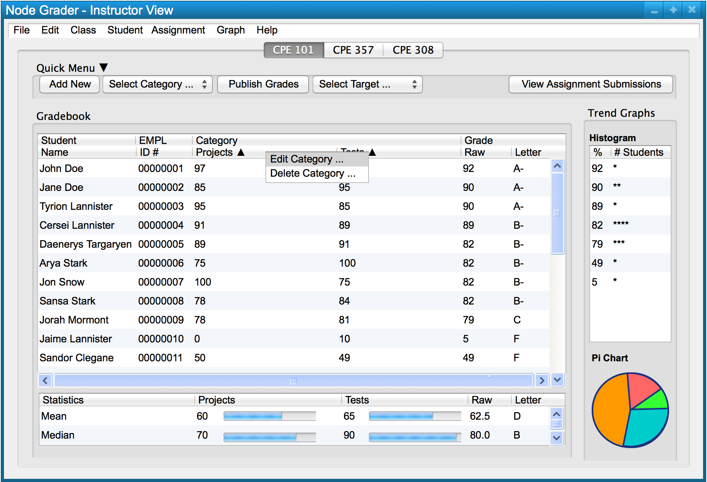
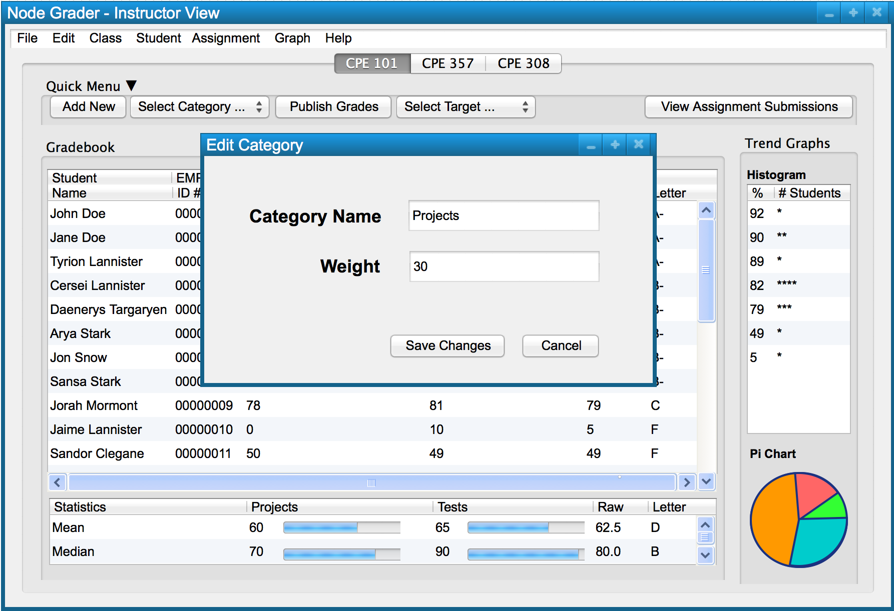

In order to modify a category, a user right clicks the category to be modified and is presented with the menu shown in Figure 1.

Figure 1: Right clicking a category.

Figure 2: Edit category dialog.
The edit category dialog shown is pre-filled with the current values for that category. After a user makes the changes they want to for that category, they save the changes by pressing the 'Save Changes' button. Alternatively, a user cancels their changes by pressing the 'Cancel' button.